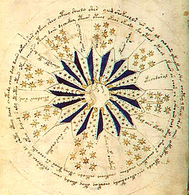

The Voynich Manuscript is a mysterious book, believed to have been written in the early 15th century, that is filled with indecipherable text and strange illustrations. Despite numerous attempts by cryptographers, linguists, and historians, no one has been able to crack the code of the manuscript or determine its origin.
The book is filled with bizarre illustrations of unknown plants, astronomical symbols, and bizarre human figures, further adding to its enigmatic nature. Some believe that it is a work of alchemy, while others think it may be a medieval hoax. The manuscript has been owned by several notable figures, including Emperor Rudolph II of the Holy Roman Empire, and it remains one of the greatest unsolved mysteries in the world of cryptography.
Various theories abound regarding the author, ranging from the possibility that it was created by an unknown civilization to the notion that it was created by an individual who simply invented a private, unrecognizable script.
← Back to Explore